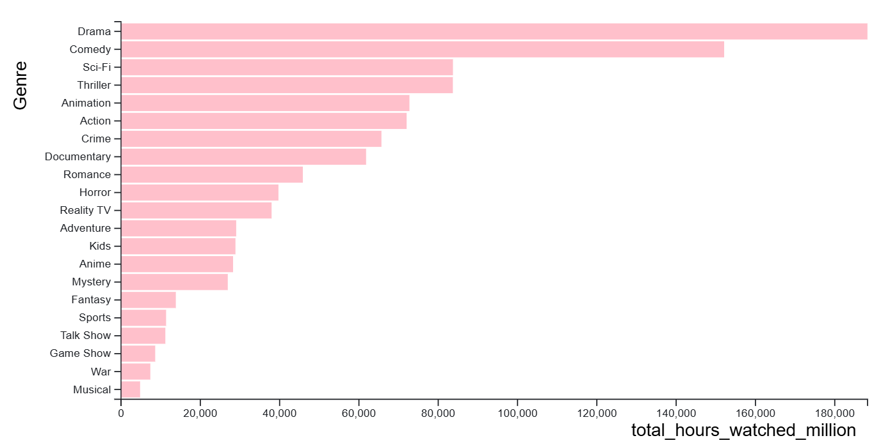
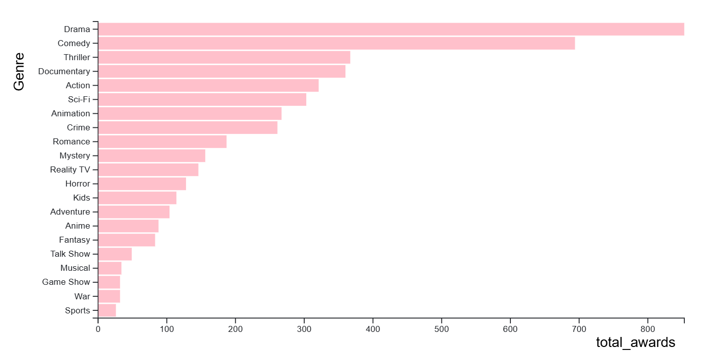
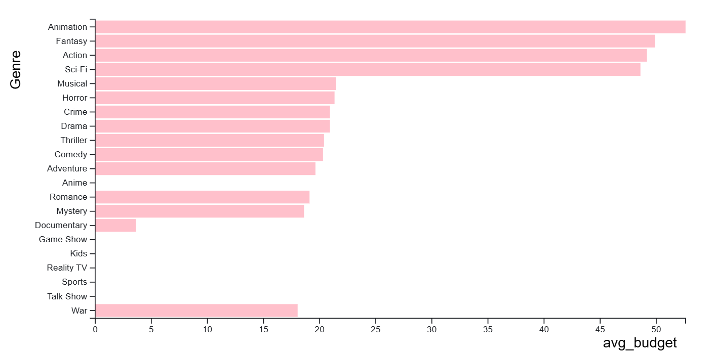
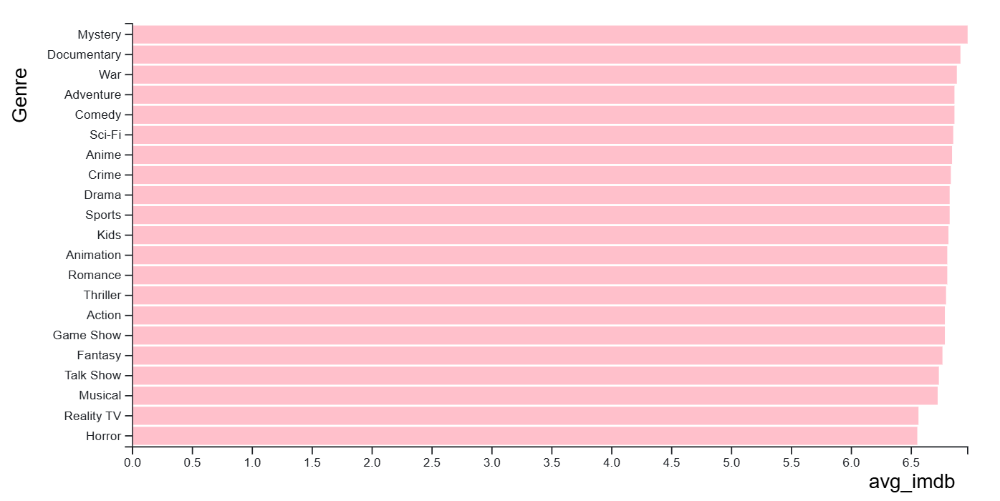
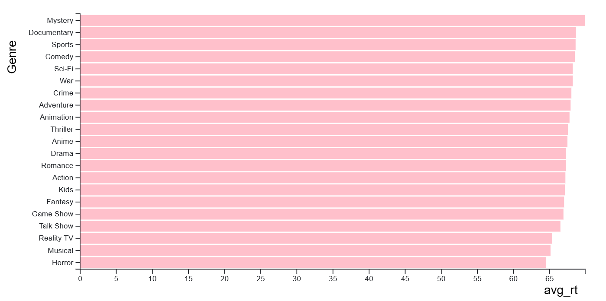

For the movie genre dataset, I knew I wanted to do a bar chart as it would easily present the data in a way that each genre can be clearly compared. I wanted to set the visualization up in a way that the movie data could be compared by each category instead of it all being on one big chart. I decided to create radio button so that the columns could be filtered through for each genre. I selected average budget, IMDb rating, and Rotten Tomatoes rating so that I could compare each genre to see which one had the highest ratings compared with their average budget.
I chose the movie genre for the y-axis so that each movie genre is displayed closely instead of spread out across the x-axis. I chose the total amount of titles, ratings for both IMDb and Rotten Tomatoes, and average budget data to be displayed on the x-axis since only one data type will be displayed on the chart at one time. This allows the viewer to see the results for each movie genre clearly instead of having a tall y-axis with the genre spread across a long x-axis.
The data for this visualization was sourced from the genre-summary dataset, which contains information about movies genres, the amount of titles, their budgets, awards, hours watched by millions, and ratings. I chose thise dataset because it provides an idea of how a movie performs across different genres based on their budget. I wanted to answer the question of which genres have the highest ratings relative to their budget.
In the early stages of my design process, I created a bar chart that included all of the genres in the filter. I quickly realized that this was not the best way to display the data because it was difficult to compare the genres with so many variables. I decided to decrease the amount of filters to compare them more easily.

In the original filters, there were 6 filters to choose from. I did came to the conclusion that the hours watched by millions filter and the awards filter were not necessary to include in the visualization. I decided to remove those filters to make the visualization easier to read.


Through the design process, I discovered that there seems to be no clear correlation between the average budget of a movie genre and its ratings through either IMBd or Rotten Tomatoes. The genres with the highest average budgets perform as well as genres with a lower average budget. This was surpising to me as I believed that a higher budget would influence the ratings by at least some degree.

The genre with the highest average budget is animation, followed by fantasy and action. The genre with the lowest average budget is documentary, followed by mystery and romance. There does not seem to be any data for the genres game shows, kids, reality TV, sports, and talk shows.

The average ratings for each genre on IMDb are very similar across all genres. No genre has a significantly higher rating than the others. This includes documentaries, which has the lowest average budget but the second highest rating.

The average ratings for each genre on Rotten Tomatoes is very similar across all genres. This is very similar to the IMDb ratings.